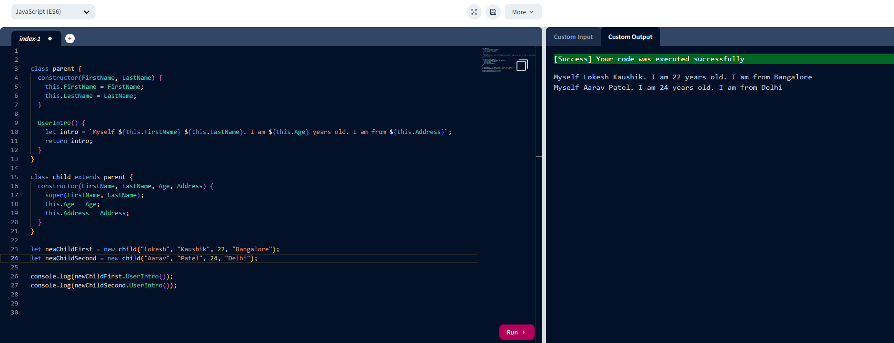
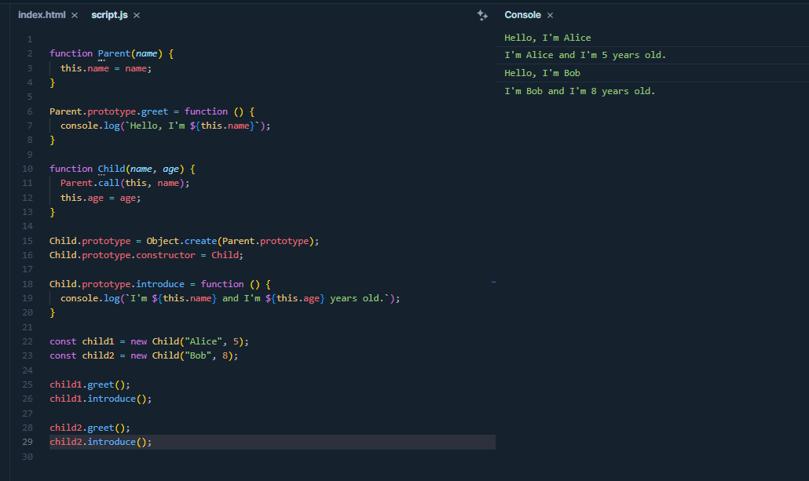
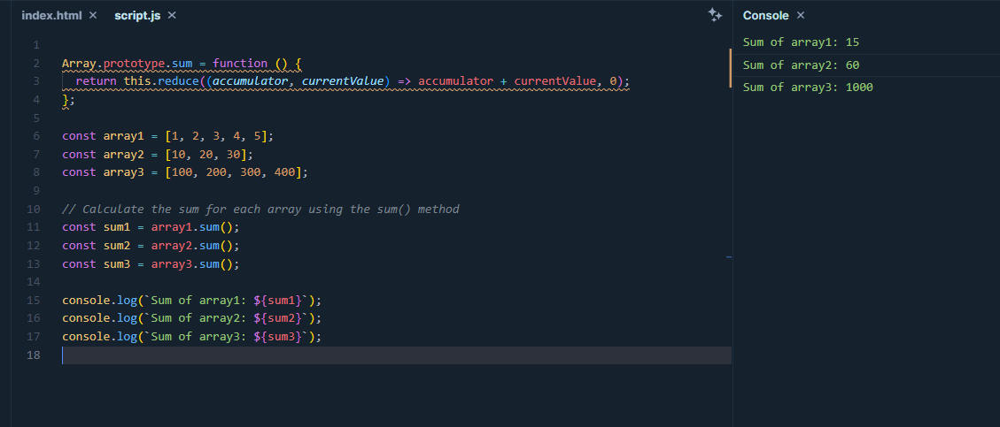
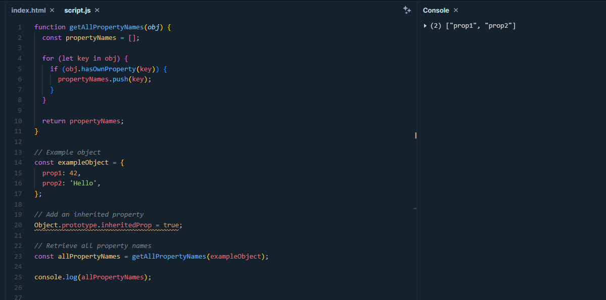

Q.1: Create 2 objects - parent and child. Attach methods to parent and use those methods in child object using parents prototype

Code Explanation:
We have two classes: parent and child. child extends parent.
Both parent and child classes have a UserIntro method that
generates an introduction string using the FirstName, LastName, Age, and Address properties.
We create two instances of the child class, newChildFirst and newChildSecond, passing the
appropriate values for FirstName, LastName, Age, and Address.
When we call newChildFirst.UserIntro(), it generates an introduction string
for the first child, and when we call newChildSecond.UserIntro(),
it generates an introduction string for the second child.
The console.log statements print the introduction strings for
both children, resulting in the output as shown in image.
Q.2: Write code to explain prototype chaining
Prototype chaining is a concept in JavaScript where objects inherit properties
and methods from other objects through a prototype chain.
Here's an example to illustrate prototype chaining:

Code Explanation:
We define a Parent constructor function and add a greet method to its prototype.
We define a Child constructor function that inherits from Parent using Object.create
and sets its constructor property back to Child.
We add an introduce method to the Child prototype.
We create instances of Child and demonstrate that they inherit properties and
methods from both the Child and Parent prototypes through the prototype chain.
This shows how prototype chaining allows objects to inherit properties and methods from
their prototypes and their prototype's prototypes, forming a chain of inheritance.
Q.3: Add a method to calculate sum of all elements in Array in array's protype, use that method to calculate sum for multiple arrays

Code Explanantion:
We define the sum method in the Array prototype, which uses the reduce
method to calculate the sum of all elements in the array.
We create multiple arrays, array1, array2, and array3.
We calculate the sum for each array using the sum() method added to the Array prototype.
We print the sum for each array, which will output the sums of their respective elements.
This allows you to use the sum() method on any array to calculate the sum of its elements.
Q.4: Write a JavaScript function to retrieve all the names of object's own and inherited properties.

Code Explanation:
We define the getAllPropertyNames function, which takes an object obj as an argument.
Inside the function, we initialize an empty array propertyNames to store the property names.
We use a for...in loop to iterate through all properties of the object.
Within the loop, we use the hasOwnProperty method to check if each property is an own property (not inherited).
If a property is an own property, we push its name (key) into the propertyNames array.
Finally, we return the array containing all property names.
When you run the code with the exampleObject, it will retrieve and print the names
of its own properties while excluding inherited properties.